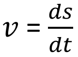
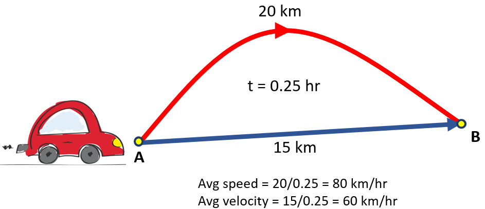

HOME BLOG EBOOKS ABOUT CONTACT SHOP
In the previous section, we looked into the similarities and differences between Distance & Displacement. Here we'll do the same with Speed & Velocity. Much like distance and displacement, the quantities Speed and Velocity are not the same, although they have some similarities.
The term "speed" is something we use very commonly and it refers to how fast a body is moving. Speed is measured in terms of the distance covered per unit time. More the distance covered in a certain interval of time, more the speed. For instance, when we say a car moves at 70 kms per hr, what that means is that the car is able to cover a distance of 70 kilometres in an hours time. Being a scalar quantity, speed is completely independent of the direction.
Velocity on the other hand is a vector quantity. Velocity refers to the rate at which a body changes its position. Velocity is measured in terms of displacement per unit time. The direction of the velocity vector is the same as the direction of the displacement.


So far, by velocity we are referring to the average velocity, which is the mean velocity of a body over a period of time. But instantaneous velocity is whats really useful from a practical perspective, it is the velocity of a body at a specified point in its journey.
The SI unit of Velocity (& speed) is meters per second (m/s) and is denoted by .